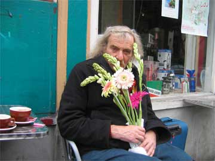

IT
TOOK 38 years, but Ira Cohen’s cult film, The Invasion
of Thunderbolt Pagoda, which was first screened in 1968
at the high point of the psychedelic hippie head rush,
is now commercially available. Given the close calls,
the long absences and his chaotic archival system, Mr.
Cohen, 71, is a little surprised himself.
“It
didn’t really involve patience,” he said in his apartment
on West 106th Street in Manhattan, surrounded by books
stacked waist high. “It was just reality.” continued -- see Ira Cohen webpage.http://www.arthurmag.com/store/dvds.php
*****
Jack Hirschman Documentary -- Friends of the Poet
filmmaker - Matthew Furey
Art Voices -- January 2009 Issue 11
Review of Joshua Walsh, Herbert Kearney, Jules Cote: Re-Neavus --
Corner of St. Claude Aves and Spain -- New Orleans


Front jacket photograph © Ed van der Elsken
Back jacket photograph © Marco Bakker www.mophotos.nl
Front flap photograph © Beatrice Rispoli
Author photograph © Anthony Caronia
Jacket design © Andrea Ho

J
Golda Blog -- Poetry & Special Articles
Golda Foundation founder Robert Yarra posts selected writings and shares his insights throughout his life travels.
* * * * *
October 26, 2008 -- Entry 1 -- Letter by Gabriel Garcia Marquez, Dorian Westerly, Uri Hertz & Jane Heil
December 3, 2008 -- Entry 2 -- Greetings from Italia
January 30, 2009 -- Entry 3 -- a poem by Dorian Westerly
March 15, 2009 -- Entry 4 -- Lionel Ziprin's passing
May 16, 2009 -- Entry 5 -- poem by Tommy Thompson
* * * * *